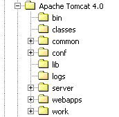
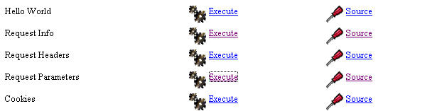

8. Anhänge
8.1. Webentwicklungs-Tools
Hier zeigen wir Ihnen, wo Sie die für die Webentwicklung erforderlichen Tools finden und wie Sie diese installieren. Bei einigen Tools haben sich die Versionen weiterentwickelt, sodass die hier gegebenen Erläuterungen möglicherweise nicht mehr auf die neuesten Versionen zutreffen. In diesem Fall muss der Leser die entsprechenden Anpassungen vornehmen... Im Kurs zur Webprogrammierung werden wir in erster Linie die folgenden Tools verwenden, die alle kostenlos verfügbar sind:
- einen aktuellen Browser, der XML anzeigen kann. Die Beispiele im Kurs wurden mit Internet Explorer 6 getestet.
- Ein aktuelles JDK (Java Development Kit). Die Beispiele in diesem Kurs wurden mit JDK 1.4 getestet. Dieses JDK enthält das Java 1.4-Browser-Plugin, mit dem Browser Java-Applets unter Verwendung von JDK 1.4 anzeigen können.
- Eine Java-Entwicklungsumgebung zum Schreiben von Java-Servlets. Hier ist es JBuilder 7.
- Webserver: Apache, PWS (Personal Web Server), Tomcat.
- Apache wird für die Entwicklung von Webanwendungen in PERL (Practical Extracting and Reporting Language) oder PHP (Personal Home Page) verwendet.
- PWS wird für die Entwicklung von Webanwendungen in ASP (Active Server Pages) oder PHP verwendet.
- Tomcat wird für die Entwicklung von Webanwendungen mit Java-Servlets oder JSP (Java Server Pages) verwendet
- Eine Datenbankverwaltungsanwendung: MySQL
- EasyPHP: ein Tool, das den Apache-Webserver, die Sprache PHP und das DBMS MySQL bündelt
8.1.1. Webserver, Browser, Skriptsprachen
- Wichtige Webserver
- Apache (Linux, Windows)
- Internet Information Server (IIS) (NT), Personal Web Server (PWS) (Windows 9x)
- Wichtige Browser
- Internet Explorer (Windows)
- Netscape (Linux, Windows)
- Serverseitige Skriptsprachen
- VBScript (IIS, PWS)
- JavaScript (IIS, PWS)
- Perl (Apache, IIS, PWS)
- PHP (Apache, IIS, PWS)
- Java (Apache, Tomcat)
- .NET-Sprachen
- Browserseitige Skriptsprachen
- VBScript (IE)
- JavaScript (IE, Netscape)
- PerlScript (IE)
- Java (IE, Netscape)
8.1.2. Wo Sie die Tools finden
http://www.netscape.com/ (Download-Link) | |
http://www.microsoft.com/windows/ie/default.asp | |
http://www.php.net http://www.php.net/downloads.php (Windows-Binärdateien) | |
http://www.activestate.com http://www.activestate.com/Products/ http://www.activestate.com/Products/ActivePerl/ | |
http://msdn.microsoft.com/scripting (folgen Sie dem Link zu Windows Script) | |
http://java.sun.com/ http://java.sun.com/downloads.html (JSE) http://java.sun.com/j2se/1.4/download.html | |
http://www.apache.org/ http://www.apache.org/dist/httpd/binaries/win32/ | |
im NT 4.0 Option Pack für Windows 95 enthalten auf der Windows 98-CD enthalten http://www.microsoft.com/ntserver/nts/downloads/recommended/NT4OptPk/win95.asp | |
http://www.microsoft.com | |
http://jakarta.apache.org/tomcat/ | |
http://www.borland.com/jbuilder/ http://www.borland.com/products/downloads/download_jbuilder.html | |
http://www.easyphp.org/ http://www.easyphp.org/telechargements.php3 |
8.1.3. EasyPHP
Diese Anwendung ist sehr praktisch, da sie Folgendes in einem einzigen Paket enthält:
- den Apache-Webserver (1.3.x)
- die Programmiersprache PHP (4.x)
- das MySQL-DBMS (3.23.x)
- ein MySQL-Verwaltungstool: PhpMyAdmin
Die Installationsanwendung sieht wie folgt aus:

Die Installation von EasyPHP ist unkompliziert, und es wird eine Verzeichnisstruktur im Dateisystem erstellt:

die ausführbare Datei der Anwendung | |
die Verzeichnisstruktur des Apache-Servers | |
das MySQL-Datenbankverzeichnis | |
die Verzeichnisstruktur der phpMyAdmin-Anwendung | |
die Verzeichnisstruktur von PHP | |
Stammverzeichnis des Verzeichnisbaums für Webseiten, die vom EasyPHP-Apache-Server bereitgestellt werden | |
Verzeichnis, in dem Sie CGI-Skripte für den Apache-Server ablegen können |
Der Hauptvorteil von EasyPHP besteht darin, dass die Anwendung vorkonfiguriert ist. Somit sind Apache, PHP und MySQL bereits für die Zusammenarbeit konfiguriert. Wenn Sie EasyPHP über die Verknüpfung im Menü „Programme“ starten, erscheint ein Symbol in der unteren rechten Ecke des Bildschirms.
 |
Es handelt sich um den Buchstaben E mit einem roten Punkt, der blinken sollte, wenn der Apache-Webserver und die MySQL-Datenbank in Betrieb sind. Wenn Sie mit der rechten Maustaste darauf klicken, gelangen Sie zu den Menüoptionen:

Über die Option „Administration“ können Sie Einstellungen konfigurieren und Funktionstests durchführen:

8.1.3.1. PHP-Verwaltung
Über die Schaltfläche „PHP-Info“ sollten Sie überprüfen können, ob die Kombination aus Apache und PHP ordnungsgemäß funktioniert: Es sollte eine Seite mit PHP-Informationen angezeigt werden:

Über die Schaltfläche „Erweiterungen“ wird eine Liste der installierten PHP-Erweiterungen angezeigt. Dabei handelt es sich eigentlich um Funktionsbibliotheken.

Der obige Bildschirm zeigt beispielsweise, dass die für die Nutzung der MySQL-Datenbank erforderlichen Funktionen vorhanden sind.
Über die Schaltfläche „Einstellungen“ werden der Benutzername und das Passwort des MySQL-Datenbankadministrators angezeigt.

Die Verwendung der MySQL-Datenbank würde den Rahmen dieser kurzen Übersicht sprengen, aber es ist hier klar, dass ein Passwort für den Datenbankadministrator festgelegt werden sollte.
8.1.3.2. Apache-Verwaltung
Ebenfalls auf der EasyPHP-Verwaltungsseite können Sie über den Link „Your Aliases“ Aliase definieren, die einem Verzeichnis zugeordnet sind. Auf diese Weise können Sie Webseiten außerhalb des www-Verzeichnisses in der EasyPHP-Verzeichnisstruktur ablegen.

Wenn Sie auf der oben genannten Seite die folgenden Informationen eingeben:

und auf die Schaltfläche „Validieren“ klicken, werden die folgenden Zeilen zur Datei <easyphp>\apache\conf\httpd.conf hinzugefügt:
Alias /st/ "e:/data/serge/web/"
<Directory "e:/data/serge/web">
Options FollowSymLinks Indexes
AllowOverride None
Order deny,allow
allow from 127.0.0.1
deny from all
</Directory>
<easyphp> bezieht sich auf das EasyPHP-Installationsverzeichnis. httpd.conf ist die Konfigurationsdatei des Apache-Servers. Sie können daher dasselbe Ergebnis erzielen, indem Sie diese Datei direkt bearbeiten. Änderungen an der Datei httpd.conf werden normalerweise sofort von Apache übernommen. Ist dies nicht der Fall, müssen Sie den Server über das EasyPHP-Symbol anhalten und neu starten:
Um unser Beispiel abzuschließen, können wir nun Webseiten im Verzeichnisbaum e:\data\serge\web ablegen:
und rufen Sie diese Seite unter dem Alias st auf:

In diesem Beispiel wurde der Apache-Server so konfiguriert, dass er auf Port 81 läuft. Sein Standardport ist 80. Dies wird durch die folgende Zeile in der Datei httpd.conf gesteuert, die wir bereits gesehen haben:
8.1.3.3. Die Apache-Konfigurationsdatei htpd.conf
Wenn Sie Apache feinabstimmen möchten, müssen Sie die Konfigurationsdatei httpd.conf manuell bearbeiten, die sich hier im Ordner <easyphp>\apache\conf befindet:

Hier sind einige wichtige Punkte, die Sie in dieser Konfigurationsdatei beachten sollten:
Rolle | |
gibt den Ordner an, der die Apache-Verzeichnisstruktur enthält | |
gibt an, welchen Port der Webserver verwenden soll. In der Regel ist dies 80. Durch Ändern dieser Zeile können Sie den Webserver auf einem anderen Port laufen lassen | |
die E-Mail-Adresse des Apache-Serveradministrators | |
der Name des Rechners, auf dem der Apache-Server läuft | |
das Installationsverzeichnis des Apache-Servers. Wenn relative Dateinamen in der Konfigurationsdatei vorkommen, beziehen sie sich auf dieses Verzeichnis. | |
das Stammverzeichnis der vom Server bereitgestellten Webseiten. Hier entspricht die URL http://machine/rep1/fic1.html der Datei E:\Program Files\EasyPHP\www\rep1\fic1.html | |
legt die Eigenschaften des vorherigen Ordners fest | |
Log-Ordner, also effektiv <ServerRoot>\logs\error.log: E:\Program Files\EasyPHP\apache\logs\error.log. Dies ist die Datei, die Sie überprüfen sollten, wenn Sie feststellen, dass der Apache-Server nicht funktioniert. | |
E:\Program Files\EasyPHP\cgi-bin ist das Stammverzeichnis des Verzeichnisbaums, in dem Sie CGI-Skripte ablegen können. Somit ist die URL http://machine/cgi-bin/rep1/script1.pl die URL für das CGI-Skript E:\Program Files\EasyPHP\cgi-bin\rep1\script1.pl. | |
legt die Eigenschaften des oben genannten Ordners fest | |
Zeilen zum Laden der Module, die es Apache ermöglichen, mit PHP4 zu arbeiten. | |
Legt fest, dass die Dateiendungen als PHP-Dateien behandelt werden sollen |
8.1.3.4. MySQL-Verwaltung mit PhpMyAdmin
Klicken Sie auf der EasyPHP-Verwaltungsseite auf die Schaltfläche „PhpMyAdmin“:

Die Dropdown-Liste unter „Home“ zeigt die aktuellen Datenbanken an. |  |
Die Zahl in Klammern gibt die Anzahl der Tabellen an. Wenn Sie eine Datenbank auswählen, werden deren Tabellen angezeigt: |  |
Die Webseite bietet eine Reihe von Funktionen für die Datenbank:

Wenn Sie auf den Link „Benutzer anzeigen“ klicken:

Hier gibt es nur einen Benutzer: root, der MySQL-Administrator. Über den Link „Bearbeiten“ können Sie dessen Passwort ändern, das derzeit leer ist – eine Vorgehensweise, die für einen Administrator nicht empfohlen wird.
Wir werden nicht weiter auf phpMyAdmin eingehen, da es sich um ein funktionsreiches Programm handelt, das eine mehrere Seiten umfassende Erörterung verdienen würde.
8.1.4. PHP
Wir haben gesehen, wie man PHP über die EasyPHP-Anwendung erhält. Um PHP direkt zu beziehen, rufen Sie die Website http://www.php.net auf.
PHP ist nicht auf die Nutzung im Web beschränkt. Sie können es als Skriptsprache unter Windows verwenden. Erstellen Sie das folgende Skript und speichern Sie es als date.php:
<?
// script php affichant l'heure
$maintenant=date("j/m/y, H:i:s",time());
echo "Nous sommes le $maintenant";
?>
Wechseln Sie in einem DOS-Fenster in das Verzeichnis, das die Datei date.php enthält, und führen Sie diese aus:
E:\data\serge\php\essais>"e:\program files\easyphp\php\php.exe" date.php
X-Powered-By: PHP/4.2.0
Content-type: text/html
Nous sommes le 18/07/02, 09:31:01
8.1.5. PERL
Am besten ist es, wenn der Internet Explorer bereits installiert ist. Ist dies der Fall, konfiguriert Active Perl ihn so, dass er PERL-Skripte in HTML-Seiten akzeptiert – Skripte, die vom IE selbst auf der Client-Seite ausgeführt werden. Die Active-Perl-Website ist unter der URL http://www.activestate.comA zu finden. Bei der Installation wird PERL in einem Verzeichnis installiert, das wir <perl> nennen. Es enthält die folgende Verzeichnisstruktur:
DEISL1 ISU 32 403 23/06/00 17:16 DeIsL1.isu
BIN <REP> 23/06/00 17:15 bin
LIB <REP> 23/06/00 17:15 lib
HTML <REP> 23/06/00 17:15 html
EG <REP> 23/06/00 17:15 eg
SITE <REP> 23/06/00 17:15 site
HTMLHELP <REP> 28/06/00 18:37 htmlhelp
Die ausführbare Datei perl.exe befindet sich in <perl>\bin. Perl ist eine Skriptsprache, die unter Windows und Unix läuft. Sie wird auch in der Webprogrammierung verwendet. Schreiben wir unser erstes Skript:
# script PERL affichant l'heure
# modules
use strict;
# programme
my ($secondes,$minutes,$heure)=localtime(time);
print "Il est $heure:$minutes:$secondes\n";
Speichern Sie dieses Skript in einer Datei namens heure.pl. Öffnen Sie ein DOS-Fenster, wechseln Sie in das Verzeichnis, in dem sich das Skript befindet, und führen Sie es aus:
E:\data\serge\Perl\Essais>e:\perl\bin\perl.exe heure.pl
Il est 9:34:21
8.1.6. VBScript, JavaScript, PerlScript
Dies sind Skriptsprachen für Windows. Sie können in verschiedenen Umgebungen ausgeführt werden, wie zum Beispiel
- Windows Scripting Host zur direkten Verwendung in Windows, insbesondere zum Schreiben von Skripten für die Systemadministration
- Internet Explorer. Dort wird es in HTML-Seiten verwendet, denen es eine Interaktivität verleiht, die mit HTML allein nicht erreicht werden kann.
- Internet Information Server (IIS), Microsofts Webserver unter NT/2000, und dessen Pendant, Personal Web Server (PWS), unter Win9x. In diesem Fall wird VBScript für die serverseitige Webprogrammierung verwendet, eine von Microsoft als ASP (Active Server Pages) bezeichnete Technologie.
Laden Sie die Installationsdatei von der URL http://msdn.microsoft.com/scripting herunter und folgen Sie den Links zu Windows Script. Folgende Komponenten werden installiert:
- der Windows Scripting Host-Container, der verschiedene Skriptsprachen wie VBScript und JavaScript sowie andere wie PerlScript unterstützt, das in Active Perl enthalten ist.
- einen VBScript-Interpreter
- ein JavaScript-Interpreter
Führen wir ein paar kurze Tests durch. Erstellen wir das folgende VBScript-Programm:
' a class
class personne
Dim nom
Dim age
End class
' creation of a person object
Set p1=new personne
With p1
.nom="dupont"
.age=18
End With
' display properties person p1
With p1
wscript.echo "nom=" & .nom
wscript.echo "age=" & .age
End With
Dieses Programm verwendet Objekte. Nennen wir es objects.vbs (die Erweiterung .vbs kennzeichnet eine VBScript-Datei). Wechseln Sie in das Verzeichnis, in dem sich die Datei befindet, und führen Sie sie aus:
E:\data\serge\windowsScripting\vbscript\poly\objets>cscript objets.vbs
Microsoft (R) Windows Script Host Version 5.6
Copyright (C) Microsoft Corporation 1996-2001. All rights reserved.
nom=dupont
age=18
Erstellen wir nun das folgende JavaScript-Programm, das Arrays verwendet:
// tableau dans un variant
// tableau vide
tableau=new Array();
affiche(tableau);
// tableau croît dynamiquement
for(i=0;i<3;i++){
tableau.push(i*10);
}
// affichage tableau
affiche(tableau);
// encore
for(i=3;i<6;i++){
tableau.push(i*10);
}
affiche(tableau);
// tableaux à plusieurs dimensions
WScript.echo("-----------------------------");
tableau2=new Array();
for(i=0;i<3;i++){
tableau2.push(new Array());
for(j=0;j<4;j++){
tableau2[i].push(i*10+j);
}//for j
}// for i
affiche2(tableau2);
// fin
WScript.quit(0);
// ---------------------------------------------------------
function affiche(tableau){
// affichage tableau
for(i=0;i<tableau.length;i++){
WScript.echo("tableau[" + i + "]=" + tableau[i]);
}//for
}//function
// ---------------------------------------------------------
function affiche2(tableau){
// affichage tableau
for(i=0;i<tableau.length;i++){
for(j=0;j<tableau[i].length;j++){
WScript.echo("tableau[" + i + "," + j + "]=" + tableau[i][j]);
}// for j
}//for i
}//function
Dieses Programm verwendet Arrays. Nennen wir es arrays.js (die Endung .js kennzeichnet eine JavaScript-Datei). Wechseln Sie in das Verzeichnis, in dem es sich befindet, und führen Sie es aus:
E:\data\serge\windowsScripting\javascript\poly\tableaux>cscript tableaux.js
Microsoft (R) Windows Script Host Version 5.6
Copyright (C) Microsoft Corporation 1996-2001. Tous droits réservés.
tableau[0]=0
tableau[1]=10
tableau[2]=20
tableau[0]=0
tableau[1]=10
tableau[2]=20
tableau[3]=30
tableau[4]=40
tableau[5]=50
-----------------------------
tableau[0,0]=0
tableau[0,1]=1
tableau[0,2]=2
tableau[0,3]=3
tableau[1,0]=10
tableau[1,1]=11
tableau[1,2]=12
tableau[1,3]=13
tableau[2,0]=20
tableau[2,1]=21
tableau[2,2]=22
tableau[2,3]=23
Zum Abschluss noch ein letztes Beispiel in PerlScript. Um auf PerlScript zugreifen zu können, muss Active Perl installiert sein.
<job id="PERL1">
<script language="PerlScript">
# du Perl classique
%dico=("maurice"=>"juliette","philippe"=>"marianne");
@cles= keys %dico;
for ($i=0;$i<=$#cles;$i++){
$cle=$cles[$i];
$valeur=$dico{$cle};
$WScript->echo ("clé=".$cle.", valeur=".$valeur);
}
# du perlscript utilisant les objets Windows Script
$dico=$WScript->CreateObject("Scripting.Dictionary");
$dico->add("maurice","juliette");
$dico->add("philippe","marianne");
$WScript->echo($dico->item("maurice"));
$WScript->echo($dico->item("philippe"));
</script>
</job>
Dieses Programm zeigt, wie man zwei Wörterbücher erstellt und verwendet: eines im klassischen Perl-Stil und das andere unter Verwendung des Windows Script Scripting Dictionary-Objekts. Speichern wir diesen Code in der Datei dico.wsf (wsf ist die Dateiendung für Windows Script-Dateien). Wechseln Sie in den Programmordner und führen Sie es aus:
E:\data\serge\windowsScripting\perlscript\essais>cscript dico.wsf
Microsoft (R) Windows Script Host Version 5.6
Copyright (C) Microsoft Corporation 1996-2001. Tous droits réservés.
clé=philippe, valeur=marianne
clé=maurice, valeur=juliette
juliette
marianne
PerlScript kann Objekte aus dem Container verwenden, in dem es ausgeführt wird. In diesem Fall handelte es sich um Objekte aus dem Windows Script-Container. Im Kontext der Webprogrammierung können VBScript-, JavaScript- und PerlScript-Skripte entweder im IE-Browser oder auf einem PWS- oder IIS-Server ausgeführt werden. Wenn das Skript etwas komplex ist, kann es sinnvoll sein, es außerhalb des Webkontexts zu testen, und zwar im Windows Script-Container, wie zuvor gezeigt. Auf diese Weise können Sie nur die Funktionen des Skripts testen, die keine browser- oder serverspezifischen Objekte verwenden. Selbst mit dieser Einschränkung bleibt diese Option nützlich, da es im Allgemeinen ziemlich unpraktisch ist, Skripte zu debuggen, die auf Webservern oder in Browsern laufen.
8.1.7. JAVA
Java ist unter der URL http://www.sun.com (siehe Anfang dieses Dokuments) verfügbar und wird in einer Verzeichnisstruktur namens <java> installiert, die folgende Elemente enthält:
22/05/2002 05:51 <DIR> .
22/05/2002 05:51 <DIR> ..
22/05/2002 05:51 <DIR> bin
22/05/2002 05:51 <DIR> jre
07/02/2002 12:52 8 277 README.txt
07/02/2002 12:52 13 853 LICENSE
07/02/2002 12:52 4 516 COPYRIGHT
07/02/2002 12:52 15 290 readme.html
22/05/2002 05:51 <DIR> lib
22/05/2002 05:51 <DIR> include
22/05/2002 05:51 <DIR> demo
07/02/2002 12:52 10 377 848 src.zip
11/02/2002 12:55 <DIR> docs
Im Verzeichnis „bin“ finden Sie „javac.exe“, den Java-Compiler, und „java.exe“, die Java Virtual Machine. Sie können die folgenden Tests durchführen:
- Schreiben Sie das folgende Skript:
//java program displaying the time
import java.io.*;
import java.util.*;
public class heure{
public static void main(String arg[]){
// retrieve date & time
Date maintenant=new Date();
// we display
System.out.println("Il est "+maintenant.getHours()+
":"+maintenant.getMinutes()+":"+maintenant.getSeconds());
}//hand
}//class
- Speichern Sie dieses Programm als heure.java. Öffnen Sie ein DOS-Fenster. Wechseln Sie in das Verzeichnis, das die Datei heure.java enthält, und kompilieren Sie sie:
D:\data\java\essais>c:\jdk1.3\bin\javac heure.java
Note: heure.java uses or overrides a deprecated API.
Note: Recompile with -deprecation for details.
Im obigen Befehl muss c:\jdk1.3\bin\javac durch den genauen Pfad zum Compiler javac.exe ersetzt werden. Sie sollten nun eine Datei namens heure.class im selben Verzeichnis wie heure.java haben; dies ist das Programm, das nun von der virtuellen Maschine java.exe ausgeführt wird.
- Führen Sie das Programm aus:
8.1.8. Apache-Server
Wir haben gesehen, dass der Apache-Server über die EasyPHP-Anwendung bezogen werden kann. Um ihn direkt zu beziehen, besuchen Sie die Apache-Website: http://www.apache.org. Die Installation erstellt eine Verzeichnisstruktur, die alle für den Server erforderlichen Dateien enthält. Nennen wir dieses Verzeichnis <apache>. Es enthält eine Verzeichnisstruktur, die in etwa wie folgt aussieht:
UNINST ISU 118 805 23/06/00 17:09 Uninst.isu
HTDOCS <REP> 23/06/00 17:09 htdocs
APACHE~1 DLL 299 008 25/02/00 21:11 ApacheCore.dll
ANNOUN~1 3 000 23/02/00 16:51 Announcement
ABOUT_~1 13 197 31/03/99 18:42 ABOUT_APACHE
APACHE EXE 20 480 25/02/00 21:04 Apache.exe
KEYS 36 437 20/08/99 11:57 KEYS
LICENSE 2 907 01/01/99 13:04 LICENSE
MAKEFI~1 TMP 27 370 11/01/00 13:47 Makefile.tmpl
README 2 109 01/04/98 6:59 README
README NT 3 223 19/03/99 9:55 README.NT
WARNIN~1 TXT 339 21/09/98 13:09 WARNING-NT.TXT
BIN <REP> 23/06/00 17:09 bin
MODULES <REP> 23/06/00 17:09 modules
ICONS <REP> 23/06/00 17:09 icons
LOGS <REP> 23/06/00 17:09 logs
CONF <REP> 23/06/00 17:09 conf
CGI-BIN <REP> 23/06/00 17:09 cgi-bin
PROXY <REP> 23/06/00 17:09 proxy
INSTALL LOG 3 779 23/06/00 17:09 install.log
Verzeichnis der Apache-Konfigurationsdateien | |
Verzeichnis der Apache-Protokolldateien (Überwachung) | |
Ausführbare Apache-Dateien |
8.1.8.1. Konfiguration
Im Verzeichnis <Apache>\conf finden Sie die folgenden Dateien: httpd.conf, srm.conf, access.conf. In den neuesten Versionen von Apache wurden diese drei Dateien in httpd.conf zusammengefasst. Wir haben bereits die wichtigsten Punkte dieser Konfigurationsdatei behandelt. In den folgenden Beispielen wurde die Apache-Version von EasyPHP zum Testen verwendet und somit auch deren Konfigurationsdatei. In dieser Datei ist DocumentRoot, das den Stamm des Verzeichnisbaums der Webseite angibt, e:\program files\easyphp\www.
8.1.8.2. PHP – Apache-Verbindung
Erstellen Sie zum Testen die Datei intro.php mit der folgenden einzigen Zeile:
<? phpinfo() ?>
und legen Sie sie im Stammverzeichnis der Webseiten des Apache-Servers ab (DocumentRoot oben). Rufen Sie die URL http://localhost/intro.php auf. Sie sollten eine Liste mit PHP-Informationen sehen:

Das folgende PHP-Skript zeigt die Uhrzeit an. Wir haben es bereits gesehen:
<?
// time : nb de millisecondes depuis 01/01/1970
// "format affichage date-heure
// d: jour sur 2 chiffres
// m: mois sur 2 chiffres
// y : année sur 2 chiffres
// H : heure 0,23
// i : minutes
// s: secondes
print "Nous sommes le " . date("d/m/y H:i:s",time());
?>
Legen Sie diese Textdatei im Stammverzeichnis des Apache-Servers (DocumentRoot) ab und nennen Sie sie date.php. Öffnen Sie einen Browser und geben Sie die URL http://localhost/date.php ein. Sie sehen dann die folgende Seite:

8.1.8.3. PERL-APACHE-Verbindung
Dies wird durch eine Zeile der Form ScriptAlias /cgi-bin/ "E:/Program Files/EasyPHP/cgi-bin/" in der Datei <apache>\conf\httpd.conf erreicht. Die Syntax lautet ScriptAlias /cgi-bin/ "<cgi-bin>", wobei <cgi-bin> der Ordner ist, in dem CGI-Skripte abgelegt werden können. CGI (Common Gateway Interface) ist ein Standard für die Kommunikation zwischen dem Webserver und Anwendungen. Ein Client fordert eine dynamische Seite vom Webserver an, d. h. eine Seite, die von einem Programm generiert wird. Der Webserver muss daher ein Programm anweisen, die Seite zu generieren. CGI definiert die Interaktion zwischen dem Server und dem Programm, insbesondere wie Informationen zwischen diesen beiden Entitäten übertragen werden.
Ändern Sie gegebenenfalls die Zeile ScriptAlias /cgi-bin/ "<cgi-bin>" und starten Sie den Apache-Server neu. Führen Sie anschließend folgenden Test durch:
- Schreiben Sie das Skript:
#!c:\perl\bin\perl.exe
# script PERL affichant l'heure
# modules
use strict;
# programme
my ($secondes,$minutes,$heure)=localtime(time);
print <<FINHTML
Content-Type: text/html
<html>
<head>
<title>heure</title>
</head>
<body>
<h1>Il est $heure:$minutes:$secondes</h1>
</body>
FINHTML
;
- Speichern Sie dieses Skript unter <cgi-bin>\heure.pl, wobei <cgi-bin> das Verzeichnis ist, das CGI-Skripte empfangen kann (siehe httpd.conf). Die erste Zeile #!c:\perl\bin\perl.exe gibt den Pfad zur ausführbaren Datei perl.exe an. Ändern Sie diesen bei Bedarf.
- Starten Sie Apache, falls Sie dies noch nicht getan haben
- Rufen Sie die URL http://localhost/cgi-bin/heure.pl in einem Browser auf. Sie sehen die folgende Seite:

8.1.9. Der PWS-Server
8.1.9.1. Installation
Der PWS (Personal Web Server) ist eine persönliche Version von Microsofts IIS (Internet Information Server). IIS ist auf NT- und 2000-Rechnern verfügbar. Auf Win9x-Rechnern ist PWS normalerweise im Installationspaket des Internet Explorers enthalten. Es wird jedoch nicht standardmäßig installiert. Sie müssen eine benutzerdefinierte Installation des IE durchführen und die Installation von PWS anfordern. Es ist auch im NT 4.0 Option Pack für Windows 95 enthalten.
8.1.9.2. Erste Tests
Das Stammverzeichnis für PWS-Webseiten ist Laufwerk:\inetpub\wwwroot, wobei „Laufwerk“ das Laufwerk ist, auf dem Sie PWS installiert haben. Wir gehen im Folgenden davon aus, dass dieses Laufwerk D ist. Somit entspricht die URL http://machine/rep1/page1.html der Datei d:\inetpub\wwwroot\rep1\page1.html. Der PWS-Server interpretiert jede Datei mit der Erweiterung .asp (Active Server Pages) als Skript, das er ausführen muss, um eine HTML-Seite zu generieren.
PWS läuft standardmäßig auf Port 80. Der Apache-Webserver ebenfalls... Sie müssen daher Apache beenden, um mit PWS arbeiten zu können, wenn Sie beide Server haben. Die andere Lösung besteht darin, Apache so zu konfigurieren, dass er auf einem anderen Port läuft. Ersetzen Sie in der Apache-Konfigurationsdatei httpd.conf die Zeile Port 80</mark> durch Port 81</mark>. Apache läuft nun auf Port 81 und kann gleichzeitig mit PWS verwendet werden. Wenn PWS läuft und Sie die URL http://localhost aufrufen, sehen Sie eine Seite, die in etwa wie folgt aussieht:

8.1.9.3. PHP – PWS-Link
- Unten finden Sie eine .reg-Datei zum Ändern der Registrierung. Doppelklicken Sie auf diese Datei, um die Registrierung zu ändern. Hier befindet sich die erforderliche DLL zusammen mit der PHP-Ausführungsdatei im Verzeichnis d:\php4. Nehmen Sie die erforderlichen Änderungen vor. Die Backslashes (\) im DLL-Pfad müssen doppelt angegeben werden.
REGEDIT4
[HKEY_LOCAL_MACHINE\SYSTEM\CurrentControlSet\Services\w3svc\parameters\Script Map]
".php"="d:\\php4\\php4isapi.dll"
- Starten Sie den Computer neu, damit die Änderung in der Registrierung wirksam wird.
- Erstellen Sie einen Ordner „php“ in d:\inetpub\wwwroot, dem Stammverzeichnis des PWS-Servers. Öffnen Sie anschließend PWS und wechseln Sie zur Registerkarte „Erweitert“. Klicken Sie auf die Schaltfläche „Hinzufügen“, um ein virtuelles Verzeichnis zu erstellen:
Verzeichnis/Durchsuchen: d:\inetpub\wwwroot\php
Alias: php
Aktivieren Sie das Kontrollkästchen „Ausführen“.
- Bestätigen Sie die Einstellungen und starten Sie PWS neu. Legen Sie die Datei intro.php in d:\inetpub\wwwroot\php ab, die nur die folgende Zeile enthält:
<? phpinfo() ?>
- Rufen Sie die URL http://localhost/php/intro.php vom PWS-Server auf. Sie sollten nun die Liste der PHP-Informationen sehen, die bereits mit Apache angezeigt wurde.
8.1.10. Tomcat: Java-Servlets und JSP (Java Server Pages)
Tomcat ist ein Webserver, der HTML-Seiten mithilfe von Servlets (vom Webserver ausgeführte Java-Programme) oder JSP (Java Server Pages) generiert, die Java-Code mit HTML-Code kombinieren. Er entspricht ASP (Active Server Pages) auf dem IIS/PWS-Server von Microsoft, wo VBScript- oder JavaScript-Code mit HTML-Code kombiniert wird.
8.1.10.1. Installation
Tomcat ist unter der URL http://jakarta.apache.org verfügbar. Sie laden eine .exe-Installationsdatei herunter. Wenn Sie dieses Programm ausführen, werden Sie zunächst aufgefordert, das zu verwendende JDK auszuwählen. Der Grund dafür ist, dass Tomcat ein JDK benötigt, um sich selbst zu installieren und anschließend Java-Servlets zu kompilieren und auszuführen. Sie müssen daher vor der Installation von Tomcat ein Java-JDK installiert haben. Es wird das aktuellste JDK empfohlen. Die Installation erstellt eine <tomcat>-Verzeichnisstruktur:

Sie müssen lediglich dieses Archiv in ein Verzeichnis entpacken. Wählen Sie ein Verzeichnis, dessen Pfad nur Namen ohne Leerzeichen enthält (also beispielsweise nicht „Programme“), da es einen Fehler im Tomcat-Installationsprozess gibt. Verwenden Sie beispielsweise C:\tomcat oder D:\tomcat. Nennen wir dieses Verzeichnis <tomcat>. Darin finden Sie einen Ordner namens jakarta-tomcat, der die folgende Verzeichnisstruktur enthält:
LOGS <REP> 15/11/00 9:04 logs
LICENSE 2 876 18/04/00 15:56 LICENSE
CONF <REP> 15/11/00 8:53 conf
DOC <REP> 15/11/00 8:53 doc
LIB <REP> 15/11/00 8:53 lib
SRC <REP> 15/11/00 8:53 src
WEBAPPS <REP> 15/11/00 8:53 webapps
BIN <REP> 15/11/00 8:53 bin
WORK <REP> 15/11/00 9:04 work
8.1.10.2. Starten/Beenden des Tomcat-Webservers
Tomcat ist ein Webserver, genau wie Apache oder PWS. Um ihn zu starten, verwenden Sie die Links im Menü „Programme“:
um Tomcat zu starten | |
um ihn zu beenden |
Wenn Sie Tomcat starten, erscheint ein DOS-Fenster mit folgendem Inhalt:

Sie können dieses DOS-Fenster minimieren. Es bleibt geöffnet, solange Tomcat läuft. Anschließend können Sie mit den ersten Tests fortfahren. Der Tomcat-Webserver läuft auf Port 8080. Sobald Tomcat läuft, öffnen Sie einen Webbrowser und geben Sie die URL http://localhost:8080 ein. Sie sollten die folgende Seite sehen:

Folgen Sie dem Link „Servlet Examples“:

Klicken Sie auf den Link „Ausführen“ für „RequestParameters“ und anschließend auf den für „Source“. So erhalten Sie einen ersten Einblick in die Funktionsweise eines Java-Servlets. Das Gleiche können Sie mit den Links auf den JSP-Seiten tun.
Um Tomcat zu beenden, verwenden Sie den Link „Stop Tomcat“ im Menü „Programs“.
8.1.11. JBuilder
JBuilder ist eine Entwicklungsumgebung für Java-Anwendungen. Um Java-Servlets ohne grafische Benutzeroberflächen zu erstellen, ist eine solche Umgebung nicht unbedingt erforderlich. Ein Texteditor und ein JDK reichen aus. JBuilder bietet jedoch gegenüber der vorherigen Methode einige Vorteile:
- Einfache Fehlersuche: Der Compiler markiert fehlerhafte Zeilen im Programm, und man gelangt leicht zu ihnen
- Code-Vervollständigung: Bei der Verwendung eines Java-Objekts zeigt JBuilder eine Liste seiner Eigenschaften und Methoden direkt im Code an. Dies ist sehr nützlich, da die meisten Java-Objekte zahlreiche Eigenschaften und Methoden haben, die schwer zu merken sind.
JBuilder ist unter http://www.borland.com/jbuilder zu finden. Um die Software zu erhalten, müssen Sie ein Formular ausfüllen. Ein Aktivierungsschlüssel wird per E-Mail versendet. Um beispielsweise JBuilder 7 zu installieren, wurden die folgenden Schritte durchgeführt:
- Es wurden drei ZIP-Dateien heruntergeladen: eine für die Anwendung, eine für die Dokumentation und eine für die Beispiele. Jede dieser ZIP-Dateien hat einen eigenen Link auf der JBuilder-Website.
- Zuerst wurde die Anwendung installiert, dann die Dokumentation und schließlich die Beispiele
- Wenn Sie die Anwendung zum ersten Mal starten, wird ein Aktivierungsschlüssel abgefragt: Dies ist der Schlüssel, der Ihnen per E-Mail zugesandt wurde. In Version 7 handelt es sich bei diesem Schlüssel tatsächlich um eine vollständige Textdatei, die beispielsweise im JB7-Installationsordner abgelegt werden kann. Wenn der Schlüssel abgefragt wird, geben Sie dann die betreffende Datei an. Sobald dies erledigt ist, wird der Schlüssel nicht mehr abgefragt.
Es gibt einige nützliche Konfigurationen, die Sie vornehmen sollten, wenn Sie JBuilder zum Erstellen von Java-Servlets verwenden möchten. Die sogenannte „Personal“-Version von JBuilder ist eine abgespeckte Version, die nicht alle für die Java-Webentwicklung erforderlichen Klassen enthält. Sie können JBuilder so konfigurieren, dass die von Tomcat bereitgestellten Klassenbibliotheken verwendet werden. So geht’s:
- Starten Sie JBuilder

- Aktivieren Sie die Option „Tools/Configure JDKs“

Im Abschnitt „JDK-Einstellungen“ oben wird im Feld „Name“ normalerweise „JDK 1.3.1“ angezeigt. Wenn Sie über ein neueres JDK verfügen, geben Sie über die Schaltfläche „Ändern“ dessen Installationsverzeichnis an. Oben haben wir das Verzeichnis „E:\Program Files\jdk14“ angegeben, in dem ein JDK 1.4 installiert wurde. Von nun an verwendet JBuilder dieses JDK für seine Kompilierungen und Ausführungen. Im Abschnitt (Class, Source, Documentation) sehen Sie eine Liste aller Klassenbibliotheken, die JBuilder durchsucht – in diesem Fall die Klassen aus JDK 1.4. Die in diesem JDK enthaltenen Klassen reichen für die Java-Webentwicklung nicht aus. Um weitere Klassenbibliotheken hinzuzufügen, verwenden Sie die Schaltfläche „Add“ und wählen Sie die zusätzlichen .jar-Dateien aus, die Sie verwenden möchten. .jar-Dateien sind Klassenbibliotheken. Tomcat 4.x enthält alle für die Webentwicklung erforderlichen Klassenbibliotheken. Sie befinden sich unter <tomcat>\common\lib, wobei <tomcat> das Tomcat-Installationsverzeichnis ist:

Über die Schaltfläche „Hinzufügen“ fügen wir diese Bibliotheken nacheinander zur Liste der von JBuilder gescannten Bibliotheken hinzu:

Ab sofort können Sie Java-Programme kompilieren, die dem J2EE-Standard entsprechen, einschließlich Java-Servlets. JBuilder wird nur für die Kompilierung verwendet; die Ausführung erfolgt anschließend durch Tomcat gemäß den im Kurs erläuterten Verfahren.